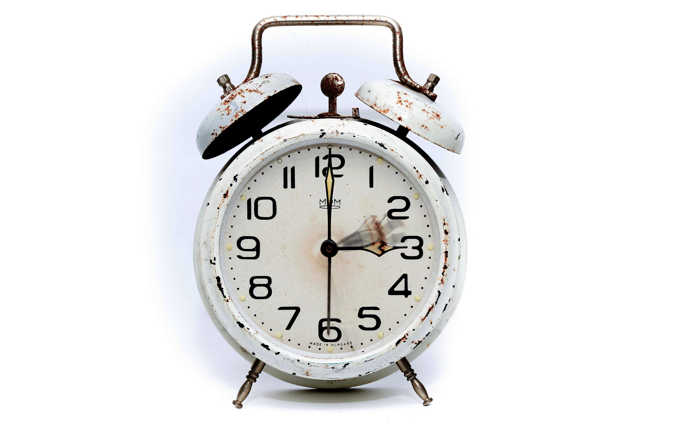

Poznaj świat gier RPG.
Na początek mała wstawka, muzyczka, New Ace - Ela la. Jak polska muzyka tworzy światową muzykę. I cóż o grach, czas. Jest sobie czas, płynie jak rzeka, leci jak światło, jak czarny kruk ponad lasami, biegnie jak jeleń między drzewami. Czas nas uczy abyśmy potrafili grać w gry RPG. Taki żarcik, co robi wojownik spartański w Metinie? Sprawdza pogodę hahaha. Gry RPG pokazują nam jak czas jest ważny. Niby w questach nie musimy się spieszyć, ale staramy się je wykonać jak najszybciej, bo to jest dla nas najbardziej optymalne jak się okazuje. No ale same gry RPG żadnych timerów raczej nie posiadają. Mierzymy sobie czas spędzony nad grą od zegarka, dziś tylko godzina, wczoraj 5 godzin, przedwczoraj 12, itd. Jednym słowem takie gry RPG zajmują czas, ale uważam, że warto w nie grać. Przedstawiają różne bastiony, różne podejścia, również te ponadczasowe, te które przetrwały próbę czasu.

I ten czas ani nie nagli ani nic tylko sobie płynie. A my wsiadamy do łodzi zwanej naszym działaniem i płyniemy sobie po niewzburzonych wodach czasu. I jest nam z tym tak dobrze. W pewnej krainie była sobie świnka i miała ona sobie taki wyściółek do chodzenia. Zebrał się wicher, wyściółek lekko się zmechacił, ale nadal był, świnka wiedziała co dobre. Warto w życiu wybierać dobrze. Jeżeli wybiorę dobrze to potem mam lepiej. Mówią ładna miska jeść nie daje, co za bzdura, skąd ty u licha wiesz kto daje ci jeść? Najpierw warto się dowiedzieć, a potem gadać. Jest czas na rodzinę, obowiązki, pracę, granie w gry wideo, inne rzeczy. Podzielić sobie czas oznacza odnaleźć się w zupełnie nowych warunkach. To jak szybko potrafię odnaleźć się w danej sytuacji zależy tylko ode mnie. Więc nie czuję się zaskoczony jak w sklepie spożywczym jest chleb, no ale chleb może być lub nie. Lubię chleb, jest bardzo smaczny, no ale co by było gdyby go zabrakło? Chciało by się powiedzieć panie dobry jak chleb, bo taka jest prawda.